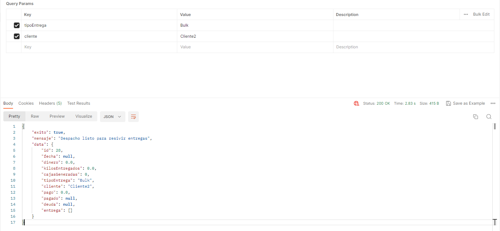
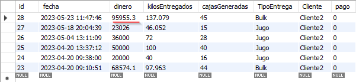

Agrolo
Stack:


Skills: MVC arquitecture | Database and interface design | SOLID
This project aims to streamline the process of recording fruit weight, revenue generated, worker
payments, tray
quantity, client information, and delivery type in a blueberry field. I myself worked in such a field a
few years ago
and witnessed firsthand how slow the process was and how it could be improved.
So, the way it worked was as follows: every 2 hours, a truck would enter the field ready to be filled
with the fruit.
The workers would approach the truck one by one and submit their trays filled with fruit for weighing.
The data would
be recorded on paper, and at the end of the working day, all the calculations would be done to determine
the payments
for each worker, the total amount of fruit collected, and the generated revenue.
Understanding this, the idea of creating an app came to mind. With the app, all the data could be
recorded and
automatically processed, eliminating the need for manual calculations.
I proposed this idea to the field owner, and he liked it. Here is the design:

I also created the entity-relationship, in this, one worker or 'trabajadores' can have multiples
'entregas', and 'entregas' can have only one 'despacho' or truck, etc...

Then I created the users stories describing the problems to be solved and the budget estimating the
amount of hours of work
The next step was creating the connection. For that, I used Entity Framework. Then,
I implemented security by creating the JWT and making the necessary
configurations.
Afterwards, I created the endpoints, connected to the database in the services folder, and whenever
there's
a need
for a business operation, I handle it through the NegocioService class, which contains all the
business
logic.
I based my architecture on MVC
Finally, I conducted tests using Postman
In this first test a created a new truck which is ready to recive the fruit

In this other test I created a delivery of fruit, asigning the workers ID, the amount of kilos and the
amount of trays
The system take the number of trays and multiply by it's weight, then that value it substracted to the
amount of kilograms and that is the total amount of kilograms delivered, after that the system take the
payments by kilogram and multiply it by the amount of kilos depending on the type of buisness in which
is related to, in this case is "Bulk", finally, I devided that value by the workers corresponding
payments and assing it to the corresponding worker by the id

All this data is stored in the database
And then, I deliver all the fruit load from the truck, in this function I assign the exact moment in
which the truck departs
here's the database, the money generated by the last truck

Currently, the project is running smoothly on the server. For the interface, I'm going to train
another
person in the
basics of programming to assist me in the development of the frontend interface. The project is still in
development due to financial reason with the client I am still waiting for the requirements, anyways the
project is going be complete
Automation framework.
Stack: 

Skills: SOLID | Automation
This is my Automation framework, written in C# and using selenium and
specflow, it
has hooks
(which are process that are executed every time a test case, scenario or step begins or finish), reporting
of the
amount of bugs and the state of the project.
In the features folders we create our Gherkin files and then we use this option and specflow automaticaly
create the methods

In this case first we go to youtube, and then we enter the query "playing god", as soon as the program
enters the result page it clicks in the first result it show and then verify the that the title of the
video is indeed the specify in the assert function

The project also have extend report for the making of report of each test case, here is a screenshot of
the report made automatically in html, and next an screenshot taken by the framework in the moment in
which the task is completed

It is avalilable in my github, here is the link:
GitBug link: FlowTest project
Cannon - A 3D shooter videogame
Stack:
Skills: SOLID
Cannon is a 3D game where you shoot barrels that appear on the screen using your cannon.
In the game
I created this video game to put my programming skills into practice and to learn Unity engine. a started
with an old version and I manage to make the cannon to shoot the targets with different types of ammo,
sounds and particle effect, but as the project start to grow it became kind of messy, so a started a new
version using some of the code used before, here is how the project look before
And this is the new version, as you can see, I also change the models so it can be more fluent and make
the terrain nicer

this is what I have done so far in 2 days. For now, I going to show the types of bullets the player can
shoot,
you can switch between three types of ammunition:
Standar Bullet: a single bullet ideal for precision.

Shotgun Shot: multiple bullets with dispersion, ideal for quickly hitting multiple
nearby
targets.

Freeze Bullet: explosive ammunition ideal for hitting multiple targets with a single
blow.

Next Steps: implement scoring system, HUD, Loot system depending of different barrel,
Improve the performance, Improve the gameplay, Fix bugs
Also, Here is the source code of the project, remember this project only have a couple hours of work so
is in a very early phase of development
GitHub Repository
Sector 7-G
Stack:
Skills: SOLID
Sector 7-G

Sector 7-G is a video game that emerged from a game jam with the theme of "the calm before the storm." It
involves
taking on the role of a technician at a nuclear station and trying to prevent the reactor from exploding,
even though
the ending is inevitable (end screen note: this was my idea). It was developed in 3 days as the final
project for the
game art design course, in which I served as a teacher for composition and music production. However, upon
learning that
I could participate, I joined the group and programmed the button mini-game, as well as composed a small
jazz piece on
the piano. Additionally, I do not appear in the credits screen, but I am mentioned on the page on
itch.io.
This is the minigame I coded, basicly when you reproduce the right pattern it give 7 seconds more and a
green text appears

But if you fail then you keep running out of time and a red text appears

As is often the case with such projects and due to the participants' inexperience, the game didn't come
out polished.
The button mini-game lacks proper feedback. Later on, I took the project and polished it myself, but my
version
doesn't include the music from the other team members. Nevertheless, it is more enjoyable, and I also
improved my jazz
piece.
Various projects
Now I am going to show many of the projects that I have worked on but I ended up abandoning them for
one reason
or another.
Acuarium
Stack:
Acuarium is a Unity project in which I put one of my songs, and then a series of 3D objects appear
following the
frequencies of the music. Meanwhile, the player is in the middle of an "Acuarium" watching the music
"flow".

gasistavazquez.online
Stack: 


This was a landing page for the promotion of gas engineer services. It reached the first place for
Mendoza center
thanks to SEO work done by me. However, after some time, the project didn't work in term of SEO, so it
was dropped.
It had some characteristic like, a 3D button of some typewriter effects
Besares.shop
Stack: 
This was a website for the promotion of a veterinary. It was made with a team of Forjadores.online. The
SEO was
not done by me. I made the landing page, login and register pages, as well as other configurations for
the
e-commerce.
link: veterinariabesares.shop